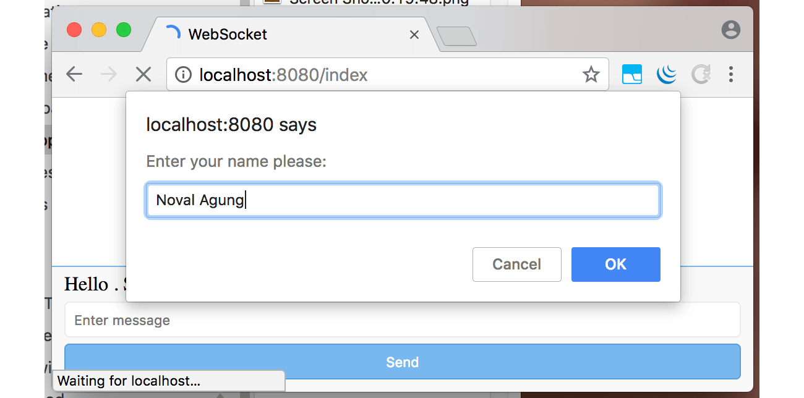
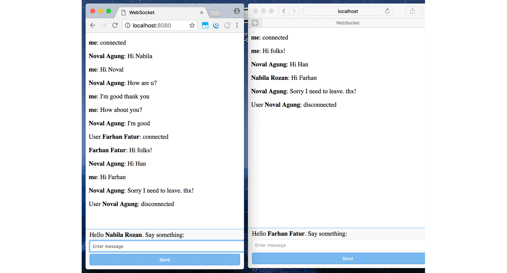

D.3. Web Socket: Chatting App
Pada bab ini kita akan belajar penerapan web socket di Go, untuk membuat sebuah aplikasi chatting. Web socket server dibuat menggunakan library Gorilla Web Socket, dan di sisi front end kita menggunakan native API milik javascript yaitu WebSocket untuk melakukan komunikasi dengan socket server.
Jelasnya kapabilitas web socket bisa dicapai dengan cukup menggunakan default package yang disediakan Go. Namun pada bab ini pembelajaran dilakukan menggunakan 4rd party library.
Seperti biasanya proses belajar dilakukan sambil praktek. Kita buat aplikasi chatting minimalis, dengan kode se-sedikit mungkin agar mudah dipahami, development dilakukan from scratch.
Nantinya saat testing akan ada banyak user terhubung dengan socket server, dalam satu room. Setiap pesan yang ditulis oleh salah seorang user, bisa dibaca oleh semua user lainnya.
Kurang lebih aplikasi yang kita kembangkan seperti gambar di bawah ini.

D.3.1. Back End
Buat folder projek baru.
mkdir chapter-d3
cd chapter-d3
go mod init chapter-d3
go get -u github.com/gorilla/websocket@v1.4.1
go get -u github.com/novalagung/gubrak/v2
Siapkan dua buah file, main.go dan index.html. Kita akan buat socket server terlebih dahulu. Silakan tulis kode berikut ke dalam main.go.
package main
import (
"fmt"
"github.com/gorilla/websocket"
gubrak "github.com/novalagung/gubrak/v2"
"io/ioutil"
"log"
"net/http"
"strings"
)
type M map[string]interface{}
const MESSAGE_NEW_USER = "New User"
const MESSAGE_CHAT = "Chat"
const MESSAGE_LEAVE = "Leave"
var connections = make([]*WebSocketConnection, 0)
Konstanta dengan prefix MESSAGE_* adalah representasi dari jenis message yang dikirim dari socket server ke semua client (yang terhubung).
- Konstanta
MESSAGE_NEW_USER. Ketika ada user baru terhubung ke room, maka sebuah pesan User XXX: connected akan muncul. Konstanta ini digunakan oleh socket server dalam mem-broadcast informasi tersebut. - Konstanta
MESSAGE_CHAT. Ketika user/client mengirim message/pesan ke socket server, message tersebut kemudian diteruskan ke semua client lainnya oleh socket server. Isi pesan di-broadcast oleh socket server ke semua user yang terhubung menggunakan konstanta ini. - Konstanta
MESSAGE_LEAVE. Digunakan oleh socket server untuk menginformasikan semua client lainnya, bahwasanya ada client yang keluar dari room (terputus dengan socket server). Pesan User XXX: disconnected dimunculkan.
Selain 3 konstanta di atas, ada variabel connections. Variabel ini digunakan untuk menampung semua client yang terhubung ke socket server.
OK, setelah kode di atas ditulis, siapkan tiga buah struct berikut.
Struct
SocketPayload, digunakan untuk menampung payload yang dikirim dari front end.type SocketPayload struct { Message string }Struct
SocketResponse, digunakan oleh back end (socket server) sewaktu mem-broadcast message ke semua client yang terhubung. FieldTypeakan berisi salah satu dari konstanta dengan prefixMESSAGE_*.type SocketResponse struct { From string Type string Message string }Struct
WebSocketConnection. Nantinya setiap client yang terhubung, objek koneksi-nya disimpan ke sliceconnectionsyang tipenya adalah[]*WebSocketConnection.type WebSocketConnection struct { *websocket.Conn Username string }
Selanjutnya buat fungsi main(), siapkan satu buah rute, /, isinya menampilkan template view index.html. Siapkan juga rute /ws yang akan menjadi gateway komunikasi socket.
func main() {
http.HandleFunc("/", func(w http.ResponseWriter, r *http.Request) {
content, err := ioutil.ReadFile("index.html")
if err != nil {
http.Error(w, "Could not open requested file", http.StatusInternalServerError)
return
}
fmt.Fprintf(w, "%s", content)
})
http.HandleFunc("/ws", func(w http.ResponseWriter, r *http.Request) {
// socket code here
})
fmt.Println("Server starting at :8080")
http.ListenAndServe(":8080", nil)
}
Handler /ws diisi dengan proses untuk konversi koneksi HTTP ke koneksi web socket. Statement websocket.Upgrade() digunakan untuk ini. Pada statement tersebut, parameter ke-4 adalah besar read buffer, sedangkan parameter ke-5 adalah besar write buffer.
http.HandleFunc("/ws", func(w http.ResponseWriter, r *http.Request) {
currentGorillaConn, err := websocket.Upgrade(w, r, w.Header(), 1024, 1024)
if err != nil {
http.Error(w, "Could not open websocket connection", http.StatusBadRequest)
}
username := r.URL.Query().Get("username")
currentConn := WebSocketConnection{Conn: currentGorillaConn, Username: username}
connections = append(connections, ¤tConn)
go handleIO(¤tConn, connections)
})
Di sisi client, ketika inisialisasi koneksi web socket, informasi username disisipkan sebagai query string. Lalu di back end diambil untuk ditempelkan ke objek koneksi socket (yang kemudian dimasukan ke connections).
app.ws = new WebSocket("ws://localhost:8080/ws?username=" + name)
Objek currentGorillaConn yang merupakan objek current koneksi web server, kita cast ke tipe WebSocketConnection, kemudian ditampung ke currentConn. Informasi username di atas ditambahkan sebagai identifier dalam objek tersebut.
Slice connections menampung semua koneksi web socket, termasuk currentConn.
Di akhir handler, fungsi handleIO() dipanggil sebagai sebuah goroutine, dalam pemanggilannya objek currentConn dan connections disisipkan. Tugas fungsi handleIO() ini adalah untuk me-manage komunikasi antara client dan server. Proses broadcast message ke semua client yg terhubung dilakukan dalam fungsi ini.
Berikut adalah isi fungsi handleIO().
func handleIO(currentConn *WebSocketConnection, connections []*WebSocketConnection) {
defer func() {
if r := recover(); r != nil {
log.Println("ERROR", fmt.Sprintf("%v", r))
}
}()
broadcastMessage(currentConn, MESSAGE_NEW_USER, "")
for {
payload := SocketPayload{}
err := currentConn.ReadJSON(&payload)
if err != nil {
if strings.Contains(err.Error(), "websocket: close") {
broadcastMessage(currentConn, MESSAGE_LEAVE, "")
ejectConnection(currentConn)
return
}
log.Println("ERROR", err.Error())
continue
}
broadcastMessage(currentConn, MESSAGE_CHAT, payload.Message)
}
}
Ketika koneksi terjalin untuk pertama kalinya, antara socket client dan socket server, fungsi broadcastMessage() dipanggil. Semua client yang terhubung (kecuali currentConn) dikirimi pesan dengan jenis MESSAGE_NEW_USER, menginformasikan bahwa ada user baru terhubung ke room.
Selanjutnya, ada perulangan tanpa henti. Statement currentConn.ReadJSON() dalam loop adalah blocking. Statement tersebut hanya akan tereksekusi ketika ada payload (berupa message/pesan) dikirim dari socket client. Payload tersebut diterima oleh socket server, kemudian di-broadcast ke semua client yang terhubung (kecuali currentConn) dengan jenis message terpilih adalah MESSAGE_CHAT. Data message sendiri disisipkan sebagai parameter ke-3 pemanggilan broadcastMessage().
Ketika ada client terputus koneksinya dengan socket server, method .ReadJSON() otomatis terpanggil, namun tidak melakukan apa-apa dan pasti mengembalikan error. Berikut adalah error message-nya.
websocket: close 1001 (going away)
Error diatas adalah indikator bahwa current client terputus koneksinya dengan socket server. Ketika hal ini terjadi, maka akan ada message yang di-broadcast ke semua client yang terhubung (kecuali currentConn) dengan jenis message adalah MESSAGE_LEAVE, untuk menginformasikan bahwa ada user (yaitu currentConn) yang leave room. Tak lupa, objek currentConn dikeluarkan dari slice connections lewat fungsi ejectConnection().
Berikut adalah deklarasi fungsi ejectConnection() dan broadcastMessage().
Fungsi
ejectConnection():func ejectConnection(currentConn *WebSocketConnection) { filtered := gubrak.From(connections).Reject(func(each *WebSocketConnection) bool { return each == currentConn }).Result() connections = filtered.([]*WebSocketConnection) }Fungsi
broadcastMessage():func broadcastMessage(currentConn *WebSocketConnection, kind, message string) { for _, eachConn := range connections { if eachConn == currentConn { continue } eachConn.WriteJSON(SocketResponse{ From: currentConn.Username, Type: kind, Message: message, }) } }
Method .WriteJSON() milik websocket.Conn digunakan untuk mengirim data dari socket server ke socket client (yang direpresentasikan oleh eachConn). Dalam fungsi broadcastMessage() di atas, semua client yang terhubung dikirimi data (sesuai parameter), terkecuali untuk current client.
Bagian back end sudah cukup. Sekarang lanjut ke layer front end.
D.3.2. Front End
Siapkan terlebih dahulu basis layout front end. Ada dua section penting yg harus disiapkan.
- Sebuah div dengan ukuran besar, nantinya diisi dengan message yang dikirim oleh current client dan client lainnya.
- Sebuah form dengan isi satu inputan text dan satu button. Nantinya user menulis pesan yang ingin di-broadcast ke inputan text, lalu klik button untuk submit message tersebut.
Kurang lebih kode-nya seperti berikut.
<!DOCTYPE html>
<html>
<head>
<title>WebSocket</title>
<style type="text/css">
// styles here
</style>
</head>
<body>
<div class="container"></div>
<div class="form">
<form onsubmit="app.doSendMessage(); return false;">
<div class="placeholder">
<label>Hello <b class="username"></b>. Say something:</label>
</div>
<input class="input-message" type="text" placeholder="Enter message">
<button type="submit">Send</button>
</form>
</div>
<script type="text/javascript">
// js script here
</script>
</body>
</html>
Tambahkan beberapa stylesheet agar terlihat cantik.
.form {
position: fixed;
left: 0;
bottom: 0;
right: 0;
background-color: #f9f9f9;
border-top: 1px solid #78b8ef;
padding: 5px 10px;
}
.form .placeholder, .form .input-message, .form button {
display: block;
margin-bottom: 5px;
}
.form .input-message {
padding: 7px;
border: 1px solid #ecebeb;
border-radius: 4px;
width: -webkit-fill-available;
}
.form button {
width: 100%;
color: white;
padding: 7px 10px;
border-radius: 4px;
background-color: #78b8ef;
border: 1px solid #5a9ed8;
}
.container { margin-bottom: 50px; }
.container p { display: block; }
Tampilan sekilas aplikasi bisa dilihat pada gambar di bawah ini.

OK, sekarang saatnya masuk ke bagian yang paling disukai anak jaman now (?), yaitu javascript. Siapkan beberapa property, satu untuk menampung objek client socket server, dan satu lagi menampung element container (element inilah yang nantinya akan diisi message yang di-broadcast oleh server).
var app = {}
app.ws = undefined
app.container = undefined
app.init = function () {
if (!(window.WebSocket)) {
alert('Your browser does not support WebSocket')
return
}
var name = prompt('Enter your name please:') || "No name"
document.querySelector('.username').innerText = name
app.container = document.querySelector('.container')
app.ws = new WebSocket("ws://localhost:8080/ws?username=" + name)
// ...
}
window.onload = app.init
Fungsi app.init() dipanggil pada event window.onload.
Di saat pertama kali page load, muncul prompt yang meminta inputan nama user. Nantinya user yang diinput dijadikan sebagai current username pada aplikasi chatting ini.

Property app.ws digunakan untuk menampung objek client web socket. Dari objek tersebut, buat 3 buah event listener. Tulis deklarasi event-nya dalam app.init.
Event
onopen. Event ini dieksekusi ketika current socket client berhasil terhubung dengan socket server.app.ws.onopen = function() { var message = '<b>me</b>: connected' app.print(message) }Event
onmessage. Event ini terpanggil ketika socket server mengirim data dan diterima oleh masing-masing socket client. Di dalam event init, message yang di-broadcast oleh socket server ditampilkan sesuai jenis message-nya, apakahNew User,Leave, atauChat.app.ws.onmessage = function (event) { var res = JSON.parse(event.data) var messsage = '' if (res.Type === 'New User') { message = 'User <b>' + res.From + '</b>: connected' } else if (res.Type === 'Leave') { message = 'User <b>' + res.From + '</b>: disconnected' } else { message = '<b>' + res.From + '</b>: ' + res.Message } app.print(message) }Event
onclose. Seperti yang sudah disinggung di atas, ketika koneksi current socket terputus dengan server, event ini terpanggil secara otomatis.app.ws.onclose = function () { var message = '<b>me</b>: disconnected' app.print(message) }
Kemudian tambahkan fungsi app.print(), fungsi ini digunakan untuk mencetak pesan ke .container.
app.print = function (message) {
var el = document.createElement("p")
el.innerHTML = message
app.container.append(el)
}
Dan fungsi app.doSendMessage(), fungsi ini digunakan untuk mengirim payload message (inputan user) ke socket server.
app.doSendMessage = function () {
var messageRaw = document.querySelector('.input-message').value
app.ws.send(JSON.stringify({
Message: messageRaw
}));
var message = '<b>me</b>: ' + messageRaw
app.print(message)
document.querySelector('.input-message').value = ''
}
OK, aplikasi sudah siap, mari lanjut ke bagian testing.
D.3.3. Testing
Buka beberapa tab, gunakan username apa saja di masing-masing tab. Coba berinteraksi satu sama lain.
Bisa dilihat, ketika ada user baru, semua client yang sudah terhubung mendapat pesan User XXX: connected.
Pesan yang ditulis oleh satu client bisa dilihat oleh client lainnya.
Ketika salah satu user leave, pesan User XXX: disconnected akan di-broadcast ke semua user lainnya. Pada gambar di bawah ini dicontohkan user Noval Agung leave.

- Gorilla Web Socket, by Gary Burd, BSD-2-Clause License
- Gubrak v2, by Noval Agung, MIT License